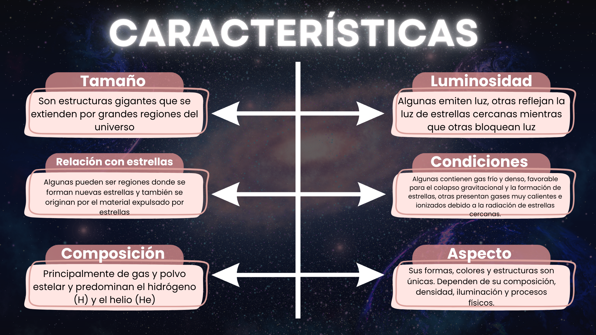
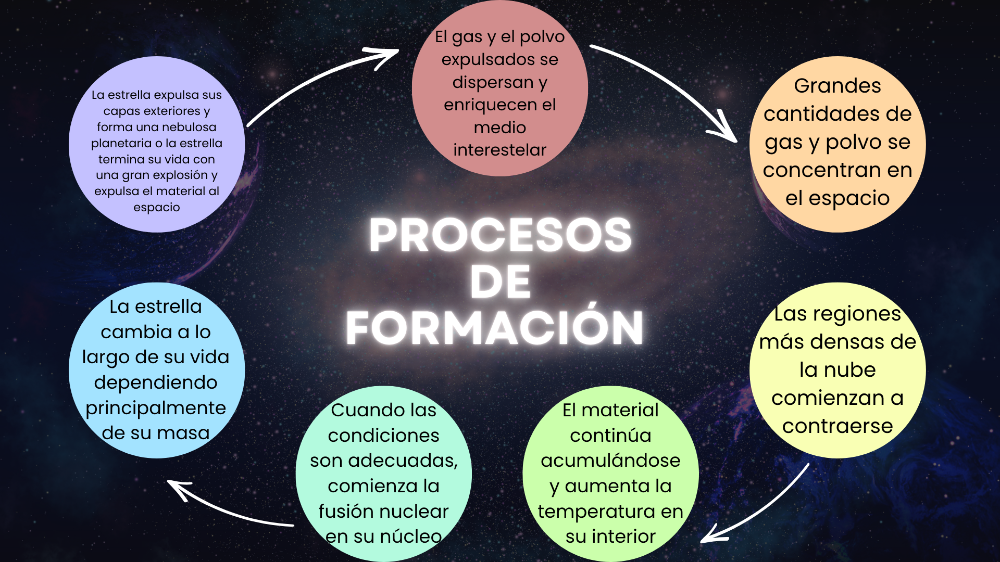
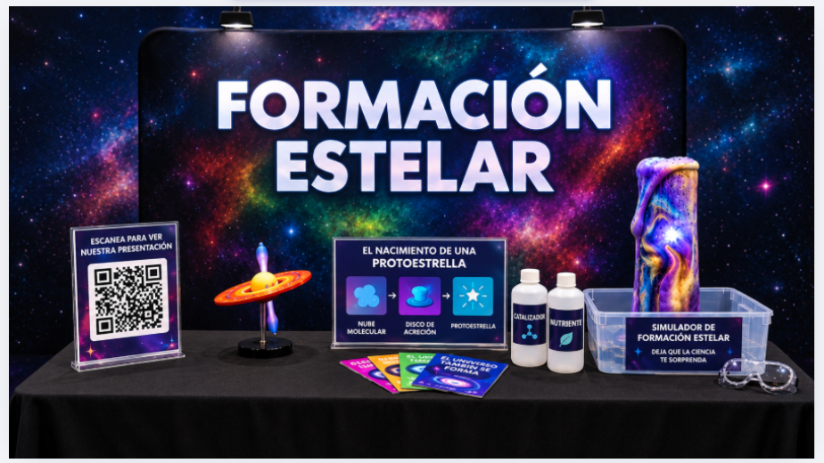

Introducción
La formación estelar es el proceso mediante el cual nacen las estrellas a partir de grandes nubes de gas y polvo llamadas nubes moleculares, compuestas principalmente por hidrógeno. Cuando una región de estas nubes se vuelve lo suficientemente densa, la gravedad provoca que el material colapse y se concentre, formando una protoestrella.
Durante este proceso, la materia se comprime y aumenta la temperatura y la presión en el núcleo. Cuando se alcanzan las condiciones adecuadas, puede comenzar la fusión nuclear. La masa de la estrella determina en gran medida su temperatura, brillo, tamaño y duración, por lo que no todas las estrellas evolucionan de la misma manera.
Objetivos
Objetivo general
Comprender cómo las nubes de gas y polvo del espacio dan origen a las estrellas e inician el ciclo de formación estelar.
Objetivos específicos
- Comprender cómo y por qué se forman las estrellas e identificar las etapas por las que pasan desde su nacimiento hasta el final de su evolución.
- Diferenciar los tipos de nebulosas, sus características y su relación con la formación estelar.
Marco teórico
1. ¿Qué son las nebulosas y cuáles son sus tipos?
2. Características de la formación estelar

1–2 estrellas por año
En una galaxia como la Vía Láctea nacen aproximadamente entre una y dos estrellas por año. Mientras lees esto, en algún lugar de nuestra galaxia pueden estar formándose nuevas estrellas a partir de enormes nubes de gas y polvo.
3. Datos y cifras
Una nube molecular donde nacen estrellas puede extenderse a lo largo de cientos de años luz y contener suficiente gas para formar miles o incluso millones de estrellas.

Simulación interactiva: nacimiento de una estrella
Observa una representación simplificada del proceso: una nube molecular se contrae por efecto de la gravedad, el material forma un disco y en el centro aparece una protoestrella que aumenta su brillo.
1. Nebulosa molecular
Velocidad seleccionada: 0.08
Una nube de gas y polvo comienza a contraerse por efecto de la gravedad.
Esta animación es un modelo visual educativo y no representa todas las escalas de tiempo ni todos los procesos físicos reales.
Nuestro stand durante la presentación del proyecto final
El stand propone un recorrido visual por la formación estelar, desde una nube molecular hasta el nacimiento de una protoestrella. Incluye modelos y elementos físicos que representan objetos y procesos del espacio, como el disco de acreción, además de un simulador educativo para explorar de manera sencilla algunas condiciones que intervienen en el proceso. También cuenta con materiales identificados como “catalizador” y “nutriente”, tarjetas informativas, un código QR para ampliar la información y la invitación “Deja que la ciencia te sorprenda”, pensada para que el visitante participe y descubra.
| El experimento físico muestra | El sitio web muestra |
|---|---|
| Una representación de la formación estelar mediante un experimento químico. | Una propuesta visual de cómo se vería y realizaría el experimento. |
| Cómo se observa una reacción química exotérmica con elementos sencillos. | Los materiales necesarios para el experimento y los elementos requeridos para la seguridad. |
